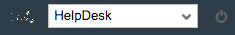

The gamification workbench makes it possible to manage gamification concepts for multiple apps. An app must be created before the gamification concept can be implemented.
Once the app has been created, it must be selected in the top right corner so that the gamification concept can be implemented for it.
